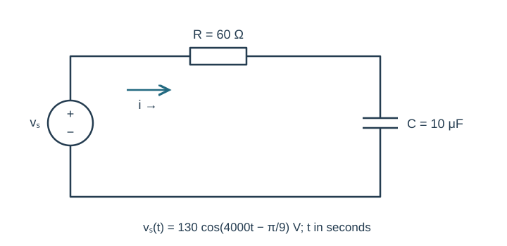
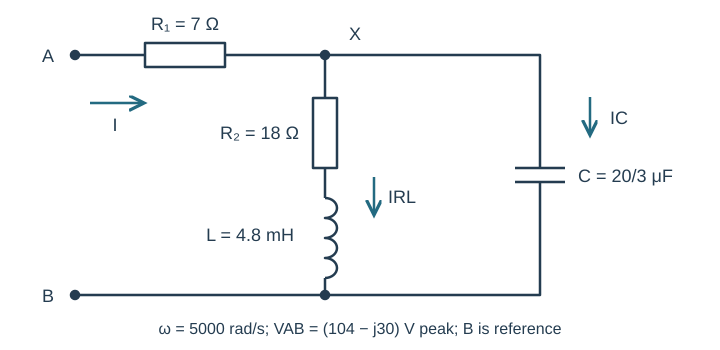
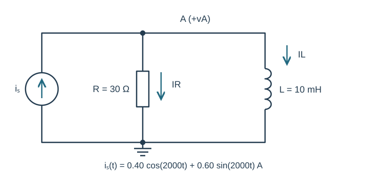
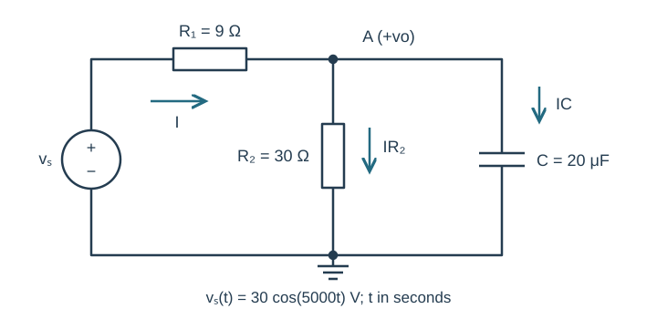
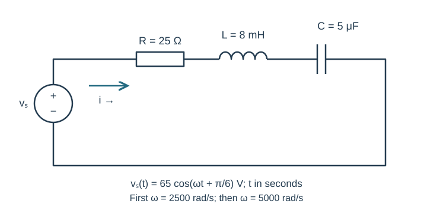
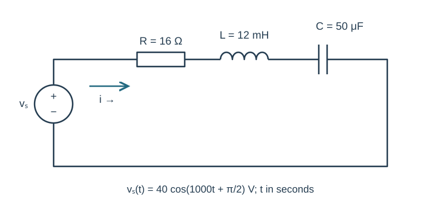
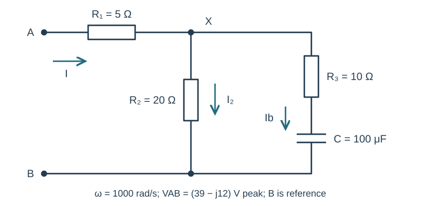
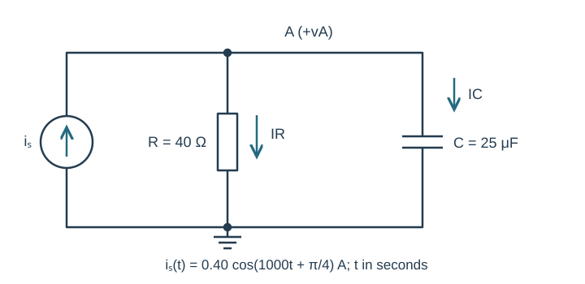
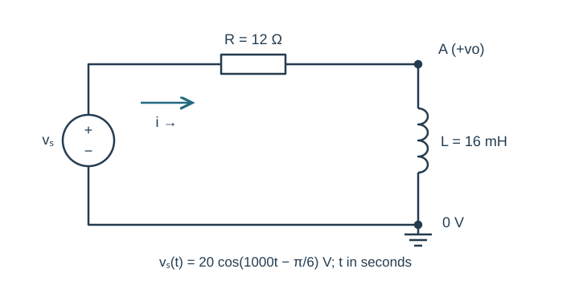
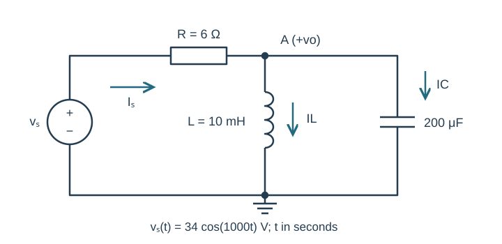

Course practice / Batch 18 / 2026-10-12 PDT
ENGR 202
作业配套：交流电路计算
HW 2 AC circuit calculations · HW 2：串并联 RLC 阻抗化简、相量电流与节点电压、带负载分压、稳态时域表达式与双时刻验证
Solve a series RC circuit and check both voltage drops
An ideal voltage source drives a series resistor R = 60 Ω and capacitor C = 10 μF, as drawn. Its voltage is \(v_s(t)=130\cos(4000t-\pi/9)\) V, with t in seconds. Current i flows clockwise, leaving the source’s positive terminal. Define the resistor and capacitor voltage drops positive where this current enters each element. Assume sinusoidal steady state.
- Draw the corresponding impedance circuit, including the source phasor and current arrow. Find the total impedance in rectangular and polar form. Divide the source phasor by the impedance to obtain I in both forms. State whether current leads or lags the source and by how many degrees.
- Find the resistor and capacitor voltage phasors in rectangular form. Verify their sum equals the source phasor, then write i(t) and the capacitor voltage in peak-cosine form. Give magnitudes and phase angles to three decimals.
- Find the period and evaluate i at t = 0 and t = T/4, using both the rectangular-phasor expression and your time-domain result. Give the two times in milliseconds and the two currents to four decimals. Explain why adding the magnitudes of the two element-voltage phasors would not be a valid KVL check.

中文提示（不含解答）
先化阻抗，再进行带象限的复数除法。KVL 相加的是复数相量，不是它们的模。
Reduce a resistor feeding two different reactive branches
At \(\omega=5000\) rad/s, the peak voltage phasor between terminals A and B is \(V_{AB}=104-j30\) V; B is the reference node. A 7 Ω resistor connects A to node X. From X to B, branch 1 contains an 18 Ω resistor in series with a 4.8 mH inductor; branch 2 contains a capacitor with exact capacitance \(C=(20/3)\) μF. Input current I runs from A through the 7 Ω resistor. Both branch currents run from X toward B. Assume steady state.
- Draw and label the impedance circuit. Calculate both branch impedances, their parallel equivalent, and the total impedance seen at A–B, showing each reduction rather than one unexplained final value. Give the total in rectangular and polar form.
- Find I, the node voltage VX, and both branch currents in rectangular form. Independently verify the input-resistor drop plus VX equals VAB, and that the two branch currents sum to I. Find the resistor and inductor drops within branch 1 and check that they sum to VX.
- Write the source voltage, input current, and node voltage as real peak-cosine functions of time in seconds. State the phase of each using the correct quadrant. Does the sign of the inductor’s reactance alone establish whether the entire input circuit is inductive? Decide using the actual equivalent impedance.

中文提示（不含解答）
先把串联 R–L 支路整体算出，再与电容并联，最后才加输入电阻。支路电压相同，不代表支路电流相同。
Convert a mixed sine–cosine current before finding node voltage
An ideal current source injects current upward from ground into node A. A 30 Ω resistor and a 10 mH inductor connect separately from A to ground. The source current is \(i_s(t)=0.40\cos(2000t)+0.60\sin(2000t)\) A, with t in seconds. Let vA be the voltage of A relative to ground, and define iR and iL downward from A. Use sinusoidal steady state.
- Convert the source to one peak cosine-reference phasor in rectangular and polar form. Calculate the total admittance \(Y=1/R+1/(j\omega L)\) and equivalent impedance. Draw the impedance circuit, including all reference arrows.
- Use VA = Is/Y to find the node-voltage phasor. Find the two branch-current phasors and check KCL. Write vA(t), iR(t), and iL(t). State whether the voltage leads or lags the source current, and by how many degrees.
- Evaluate all three currents at t = 0 and t = T/4 and verify instantaneous KCL at each time. Give T/4 in milliseconds. A proposed solution uses \(0.40+j0.60\) A for the source phasor: show explicitly which real sine term that choice produces and explain the sign error.

中文提示（不含解答）
余弦参考下，正的 sin 项对应负的虚部。先统一参考再用节点导纳，最后用两个时刻检查 KCL。
Calculate a loaded capacitive voltage divider
An ideal source \(v_s(t)=30\cos(5000t)\) V drives a 9 Ω series resistor R1. At its far end, node A connects to ground through two parallel elements: a 30 Ω load resistor R2 and a 20 μF capacitor. The output vo is node A relative to ground. Source current leaves the positive source terminal; load and capacitor currents point from A to ground. Assume sinusoidal steady state and t in seconds.
- Draw the impedance circuit and find the parallel load Zp and total input impedance. Apply \(V_o=V_sZ_p/(R_1+Z_p)\) to obtain the output phasor in rectangular and polar form, then write vo(t).
- Calculate the input current and the two branch currents. Verify KCL at A and KVL around the source, R1, and output. Give the output at t = 0 and t = T/4, and state the output’s phase relative to the input.
- Now remove only R2, leaving an open circuit where that resistor was and keeping the capacitor connected. Recalculate the output amplitude and phase. Compare loaded and unloaded amplitudes, including the percentage reduction relative to the unloaded amplitude. Explain why using the unloaded divider formula for the original circuit neglects a current path.

中文提示（不含解答）
分压公式里的负载阻抗应包含所有并联元件。移除负载电阻是开路，不是把它改成 0 Ω。
Recalculate the same RLC circuit at a second frequency
The drawn series circuit contains R = 25 Ω, L = 8 mH, and C = 5 μF. Initially its ideal source is \(v_s(t)=65\cos(2500t+\pi/6)\) V. Current flows clockwise from the positive source terminal; each passive-element voltage is a drop along that current. Assume sinusoidal steady state and t in seconds.
- Draw the impedance circuit at \(\omega_1=2500\) rad/s. Find the total impedance and current phasor in rectangular and polar form. Find all three element-voltage phasors, check KVL, and write i(t). State whether the current leads or lags the source.
- Change only the source angular frequency to \(\omega_2=5000\) rad/s; keep its 65 V peak and +π/6 phase. Recalculate every element impedance, the total impedance, the current phasor and i(t). Compare the two current amplitudes and explain the change directly from the inductive and capacitive reactances.
- At the second frequency, find the inductor and capacitor voltage phasors and explain how each can have a magnitude greater than the source while their sum is zero. Verify KVL again. Find i(0) and i(T2/4), with T2/4 in milliseconds. Explain why reusing the first-frequency capacitor impedance would invalidate the result.

中文提示（不含解答）
同一个电路换频率后，L 和 C 的阻抗都必须重算。相反方向的电抗电压可以相互抵消；电压模大不违反 KVL。
A phased voltage source drives a capacitive RLC loop
The source \(v_s(t)=40\cos(1000t+\pi/2)\;\mathrm V\) drives series R=16 Ω,L=12 mH,C=50 μF. Current is clockwise from source positive; all element voltages are passive drops along it.
- Copy the time-domain circuit and draw the impedance circuit including the source phasor. Compute ZL,ZC,totalZ and I in rectangular/polar form.
- Write i(t), calculate VR,VL,VC and verify KVL. State the current lead or lag relative to the source.
- Predict i(0) and i(π/2000 s). For an optional settled LTspice check, state the source sine frequency and phase and compare the two phase positions using a correctly oriented current and two cursor readings.

中文提示（不含解答）
先保留源本身的相位，再除以复阻抗；被动电压降沿所定义的电流方向。
Reduce a resistor in parallel with a series RC branch
At ω = 1000 rad/s, terminal A connects through R1 = 5 Ω to node X. From X to reference B, branch 1 is R2 = 20 Ω, while branch 2 is R3 = 10 Ω in series with C = 100 μF. Apply VAB = (39 − j12) V peak. Input current is A → X, with both branch currents X → B.
- Draw the impedance circuit and reduce the parallel block before adding R1. Give every intermediate impedance and total ZAB in rectangular and polar form.
- Find input current, VX, both branch currents, and passive drops across R1, R3 and C.
- Verify KCL at X and KVL along each A-to-B path. State the relative phase of input current and applied voltage; explain why R3 and C share one branch current.

中文提示（不含解答）
把串联 RC 先合成一个支路阻抗；两个并联支路的电压相同，但电流不必相同。
A phased current source can give a zero-phase node voltage
The upward source \(i_s(t)=0.40\cos(1000t+\pi/4)\;\mathrm A\) injects into node A. R = 40 Ω and C = 25 μF each connect A to ground. Define vA positive at A and both passive branch currents downward.
- Draw time-domain and impedance circuits, including the source phasor. Find total admittance and equivalent impedance.
- Find VA in rectangular and polar form and write vA(t). Calculate resistor and capacitor current phasors and verify KCL.
- Predict vA(0) and vA(π/2000 s). Explain why zero absolute voltage phase does not mean voltage and source current are in phase. Optionally compare both phase positions in a settled simulation with proper units and cursors.

中文提示（不含解答）
绝对相位取决于时间参考；判断谁领先谁应比较两个相位，而不是只看其中一个是否为零。
Use the inductor as the divider output
The source \(v_s(t)=20\cos(1000t-\pi/6)\;\mathrm V\) connects through R = 12 Ω to node A. L = 16 mH connects A to ground, also joined to source negative. Current flows clockwise through R then L. Output vo is positive at A relative to ground.
- Draw the impedance circuit, find total Z and current I, then find Vo by impedance division in rectangular and polar form.
- Write vo(t), find VR and verify Vs = VR + Vo. State the output/source amplitude ratio and relative phase.
- Predict vo(0) and vo(π/2000 s). Explain how reversing only the output-voltmeter polarity would change its phasor and waveform.

中文提示（不含解答）
输出在电感上，分压式的分子是电感阻抗；反接测量极性相当于整个电压乘以 −1。
Check a divider whose reactive branch currents oppose
The source \(v_s(t)=34\cos(1000t)\;\mathrm V\) connects through R = 6 Ω to node A. L = 10 mH and C = 200 μF each connect A to ground. Output vo is positive at A. Source current flows through R toward A; both reactive branch currents point downward. Work only at the stated frequency.
- Draw the impedance circuit. Reduce the parallel LC load, then find total input impedance and source current.
- Find Vo in rectangular and polar form and write vo(t). Calculate IL, IC and the resistor drop. Verify KCL and KVL.
- Predict vo(0) and vo(π/2000 s). Compare the capacitor current magnitude with input current magnitude, explaining the complex sum rather than adding magnitudes. Optional SPICE checks must use a settled cycle and two labeled cursor values.

中文提示（不含解答）
电感与电容支路电流可能朝相反的相量方向；参考方向仍都是从节点流向地。